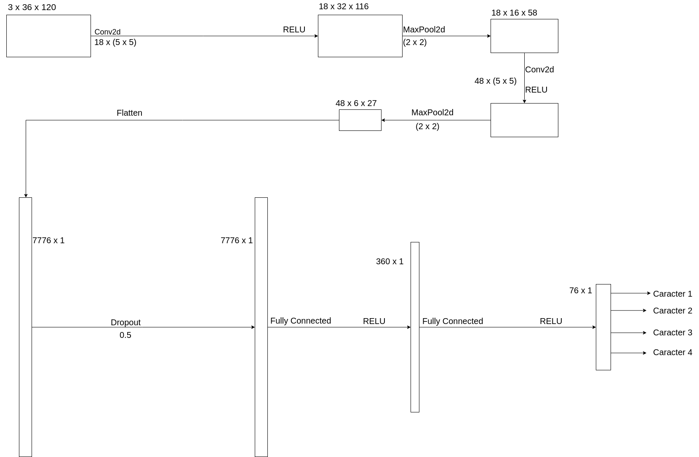

CNN para resolução de CAPTCHA

github.com/davidpierre21/sphinx-captcha
github.com/davidpierre21/oedipus
Sphinx Captcha
Exemplos de captcha gerados


Oedipus
A Rede NeuralImagem Completa
Modelo
self.conv1 = nn.Conv2d(3, 18, 5)
self.pool1 = nn.MaxPool2d(2)
self.conv2 = nn.Conv2d(18, 48, 5)
self.pool2 = nn.MaxPool2d(2)
# Flatten
self.drop = nn.Dropout(0.5)
self.fc1 = nn.Linear(48 * 6 * 27, 360)
self.fc2 = nn.Linear(360, 19 * 4)
x = F.relu(self.conv1(x))
x = self.pool1(x)
x = F.relu(self.conv2(x))
x = self.pool2(x)
x = x.view(-1, 48 * 6 * 27) # Flatten
x = self.drop(x)
x = F.relu(self.fc1(x))
x = self.fc2(x).view(-1, 4, 19)
x = F.softmax(x, dim=2)
x = x.view(-1, 4 * 19)
Modelo
Parâmetros
- Epochs = Máximo de 50
- Divisão pra validação e treino = 20%
- Loss Function = Binary Cross Entropy Loss
- Optimizer = Adadelta
Resultados
Resultados
Média para caracteres individuais: 94.72%Média para CAPTCHA completo: 81.71%